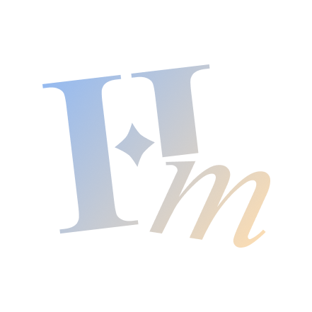
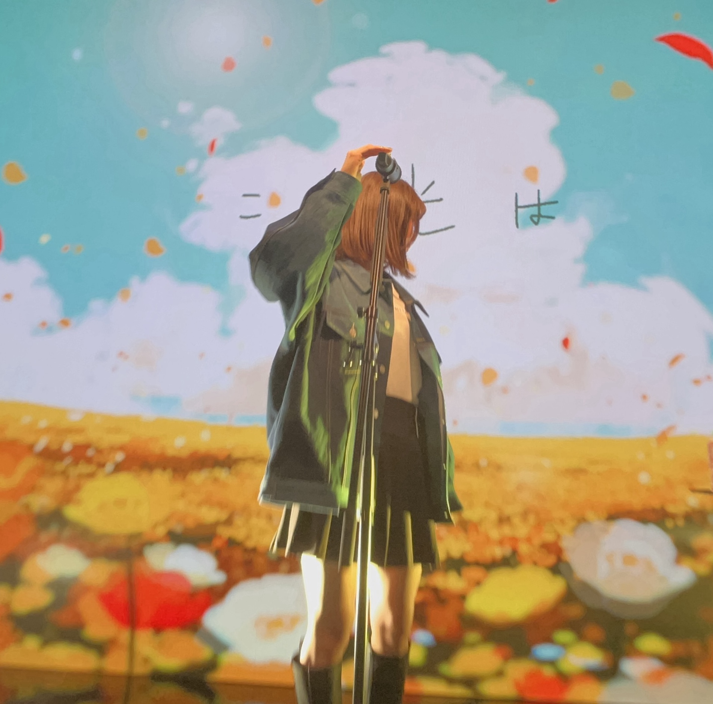

世界観を、触れられる体験として実装する
表現と操作感をつなぎ、遊ぶ人に伝わる体験へ落とし込む実装をする。

HELLO, I’M
MEGU HISANAGA 学生/ゲームプログラマ
慶應義塾大学 環境情報学部3年 ゲーム制作と、分散VRに関する研究に取り組んでいます。 デザインの意図と実装の制約の間を繋ぎ、表現と操作感の両面からプレイヤーが入り込める体験を実現したいと考えています。 ユーザーの目をキラキラさせる表現を、技術によって魅力が伝わる体験へと磨き上げられるエンジニアを目指しています。

ALL WORKS
これまでに制作した作品を掲載しています。動画や画像から実際の作品の様子をご覧いただけます。
WHAT I BRING
表現と操作感をつなぎ、遊ぶ人に伝わる体験へ落とし込む実装をする。
既存の技術にとらわれず、目的に合う方法や制約の中での解決方法を考えて試していく。
企画・デザインなど異なる役割のメンバーと対話し、認識をすり合わせながらより良い体験を技術で形にする。
CAREER
プログラミングに出会ったきっかけから、これまでの開発やチームでの取り組みの経験をまとめています。
BEGINNING
高校の選択授業でプログラミングに触れ、簡単なゲームを作成しました。ものづくりの手段としてコードを使うことに興味を持ちました。
TURNING POINTコーディングを学ぶことができる進路を選択
COMMUNITY
大学のSplatoonコミュニティに参加し、イベントに参加しました。ゲーム業界のOB・OGの方々と交流する機会を得ました。
TURNING POINTゲーム業界への興味を持ち始める
COMMUNITY / LEADERSHIP
公式HP制作チームで、HP作成タスクリーダーを担当しました。異なる技術力やマインドのメンバーをまとめる経験や、他の役職(特にデザイン担当者)との連携の重要性を学びました。
GAME DEVELOPMENT
Leadersプログラムに参加し、Unityを用いたゲーム開発を基礎から学びました。その上で、イベントで中高生にUnityの技術を教え、イベント全体を通じてゲーム開発の楽しさを伝える体験づくりに注力しています。
TURNING POINT個人でのゲーム制作を開始
HACKATHON / AI
4人チームでAIを活用した友達探しプラットフォームを開発し、開催地AI賞を受賞しました。機能ごとに役割分担を決め、AIを用いたチャット機能の部分を担当しました。 チームでのアーキテクチャ統一などの課題を経験し、チーム開発の難しさと楽しさを学びました。
WEB DEVELOPMENT
研究会のWebサイトの運用を担当しています。研究会の活動内容や成果、メンバーの情報の整理などを研究会の方々と相談しながら行っています。
INTERNSHIPS
GAME DEVELOPMENT
ゲーム開発の一連の流れを学び、現在地と今後の学習の方向性を考える機会になりました。
APPLICATION
要件定義・設計の考え方や、チームで意見を出し合うことの大切さを実践的に学びました。
GAME DEVELOPMENT
チーム開発を通じてゲーム開発の工数管理やAI活用、現場で求められる役割について学びました。
APPLICATION
1ヶ月半の実務を通じ、ソフトウェアアーキテクチャとコードレビューを踏まえた設計を学びました。
SKILLS
制作経験をもとにした自己評価
（★★★：自走して実装・改善できる ★★☆：調べながら制作に活用できる ★☆☆：基本的な文法がわかる）
RESEARCH
現在、バンミーター・植原合同研究会(SFC RG)で取り組んでいる研究内容についてです。
RESEARCH THEME
サーバーに依存しない分散型VRによって、低遅延で自由に共有できるVR空間の実現を目指しています。先行研究の手法では、通信コストの高さが課題です。
共同編集に用いられるdelta-CRDTを使用し、距離に応じた配送頻度の調整をすることで通信コストを削減する手法を提案します。
delta-CRDTを用いた分散VRのプロトタイプを実装し、通信コストの削減を確認しました。 今後は、ACK管理の工夫やVRへの最適化などを行い、実際のVR空間での実用性を検証していく予定です。